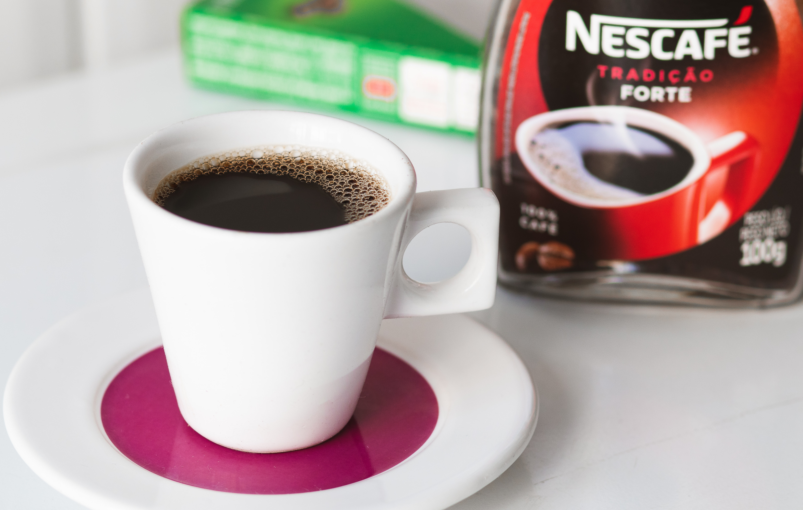

WHY NESCAFÉ
Every cup of NESCAFÉ coffee carries these antioxidants, and is especially high in polyphenols, which work together with other minerals to help your body and cells function optimally, preventing disease, and maintaining good health in general.
View All Products
